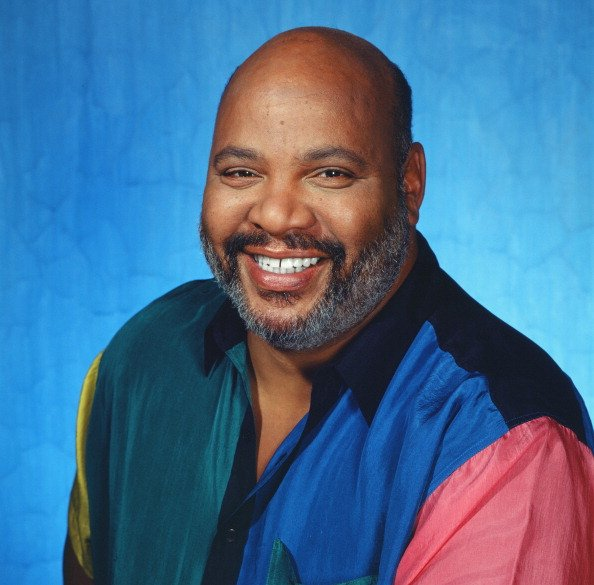

William Smitherton
Now, this is a story all about how
My life got flipped-turned upside down
And I'd like to take a minute
Just sit right there
I'll tell you how I became the prince of a town called Bel Air
In west Philadelphia born and raised
On the playground was where I spent most of my days
Chillin' out maxin' relaxin' all cool
And all shootin some b-ball outside of the school
When a couple of guys who were up to no good
Started making trouble in my neighborhood
I got in one little fight and my mom got scared
She said 'You're movin' with your auntie and uncle in Bel Air'
I begged and pleaded with her day after day
But she packed my suit case and sent me on my way
She gave me a kiss and then she gave me my ticket.
I put my Walkman on and said, 'I might as well kick it'.
First class, yo this is bad
Drinking orange juice out of a champagne glass.
Is this what the people of Bel-Air living like?
Hmm this might be alright.
But wait I hear they're prissy, bourgeois, all that
Is this the type of place that they just send this cool cat?
I don't think so
I'll see when I get there
I hope they're prepared for the prince of Bel-Air
Well, the plane landed and when I came out
There was a dude who looked like a cop standing there with my name out
I ain't trying to get arrested yet
I just got here
I sprang with the quickness like lightning, disappeared
I whistled for a cab and when it came near
The license plate said fresh and it had dice in the mirror
If anything I could say that this cab was rare
But I thought 'Nah, forget it' - 'Yo, homes to Bel Air'
I pulled up to the house about seven or eigth
And I yelled to the cabbie 'Yo homes smell ya later'
I looked at my kingdom
I was finally there
To sit on my throne as the Prince of Bel Air
Oops did i do thaaaaaaat?
Boom Booom Booom. I want you in my room
What am I?
